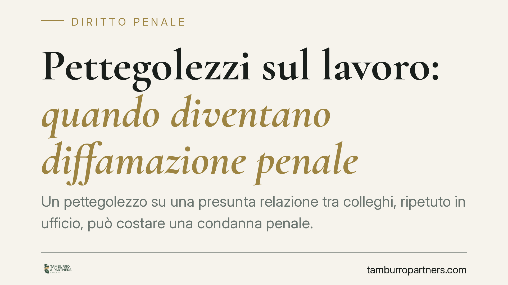

Pettegolezzi sul lavoro: quando diventano diffamazione penale
Un pettegolezzo su una presunta relazione tra colleghi, ripetuto in ufficio, può costare una condanna penale. La Cassazione ha ribadito che diffondere notizie lesive dell'altrui reputazione, anche solo mormorate tra pochi, integra il reato di diffamazione. Chiariamo quando le chiacchiere superano la soglia del penalmente rilevante e cosa rischia chi le mette in circolazione.

Il caso e perché conta
Parlare della vita privata altrui è un'abitudine sociale diffusa. Sul piano giuridico, però, esiste una linea che separa il commento innocuo dall'illecito penale. Quella linea è la reputazione della persona.
Secondo una recente pronuncia della Corte di Cassazione, la diffusione in ambito lavorativo di pettegolezzi su presunte relazioni amorose di un collega può integrare il reato di diffamazione. Non serve un articolo di giornale o un post sui social: bastano affermazioni riferite ad altri, capaci di ledere l'onore e la considerazione della persona interessata.
Inquadramento normativo
Il reato è previsto dall'art. 595 del codice penale, che punisce chi, comunicando con più persone, offende la reputazione altrui. Due sono gli elementi essenziali.
Il primo è la comunicazione con più persone: la diffamazione, a differenza dell'ingiuria (oggi depenalizzata), presuppone che l'offesa raggiunga almeno due soggetti diversi dalla persona offesa. Non occorre una platea vasta: la giurisprudenza ritiene sufficiente che la notizia sia riferita a due o più interlocutori, anche in momenti distinti.
Il secondo è il contenuto lesivo: l'affermazione deve incidere sull'onore o sul decoro della persona. Attribuire a un collega una relazione sentimentale non richiesta, magari extraconiugale, insinuando comportamenti opportunistici o inappropriati sul lavoro, rientra pienamente in questa categoria.
L'art. 595 prevede pene più severe (reclusione fino a un anno o multa) quando l'offesa consiste nell'attribuzione di un fatto determinato, cioè un episodio specifico e circostanziato, non una semplice opinione generica. Dire "tra i due c'è del tenero" è diverso dall'affermare che due colleghi hanno una relazione clandestina in ufficio: la seconda formulazione è un fatto determinato e aggrava la posizione.
Implicazioni pratiche
Per chi lavora in un ambiente strutturato, la conseguenza è concreta: il classico "chiacchiericcio da corridoio" non è un porto sicuro. Chi mette in circolazione voci sulla vita privata dei colleghi può essere denunciato, processato e condannato, con obbligo di risarcire il danno.
La verità del fatto non è sempre una scriminante. La cosiddetta *exceptio veritatis* (la prova che quanto affermato è vero) opera in casi limitati e non copre la sfera strettamente privata quando manca un interesse pubblico alla divulgazione. In altre parole, anche se la relazione esistesse davvero, diffonderla per il gusto del pettegolezzo non mette al riparo dalla responsabilità.
Da non trascurare il profilo del datore di lavoro. Un contesto aziendale in cui circolano voci diffamatorie può generare responsabilità disciplinari verso i dipendenti coinvolti e, in casi di mobbing o clima ostile, esporre l'azienda a contenzioso lavoristico. Il pettegolezzo, insomma, non è mai un fatto puramente personale.
Sul piano civile, alla condanna penale si affianca quasi sempre la richiesta di risarcimento del danno non patrimoniale, che il giudice liquida in via equitativa tenendo conto della diffusione della notizia e della lesione subita.
Cosa fare in concreto
- Se ti ritieni diffamato: raccogli prove utili (messaggi, testimonianze di chi ha ascoltato le affermazioni, email) e presenta querela entro tre mesi dal fatto, termine perentorio per procedere.
- Se sei accusato di diffamazione: non minimizzare. Ricostruisci il contesto e valuta con un legale la possibilità di una remissione di querela o di un accordo risarcitorio prima del dibattimento.
- Come dipendente: evita di riferire a terzi notizie sulla vita privata dei colleghi; la percezione di "innocuità" non esclude la rilevanza penale.
- Come datore di lavoro: adotta un codice di condotta interno e intervieni sui comportamenti che alimentano voci lesive, anche a tutela della reputazione aziendale.
- In ogni caso: verifica sempre i termini di decadenza per la querela e conserva la documentazione, perché nella diffamazione la prova della diffusione è decisiva.
La reputazione è un bene giuridico protetto. Trattare le chiacchiere come qualcosa di irrilevante è, sul piano legale, un errore di prospettiva.
---
*Contributo informativo a cura di Tamburro & Partners - Avv. Giuseppe Tamburro. Non costituisce parere legale.*
Ogni condominio ha una storia a sé.
Se gestisci un'amministrazione e vuoi un confronto su una specifica questione condominiale, scrivi allo studio. Ti rispondiamo entro un giorno lavorativo.